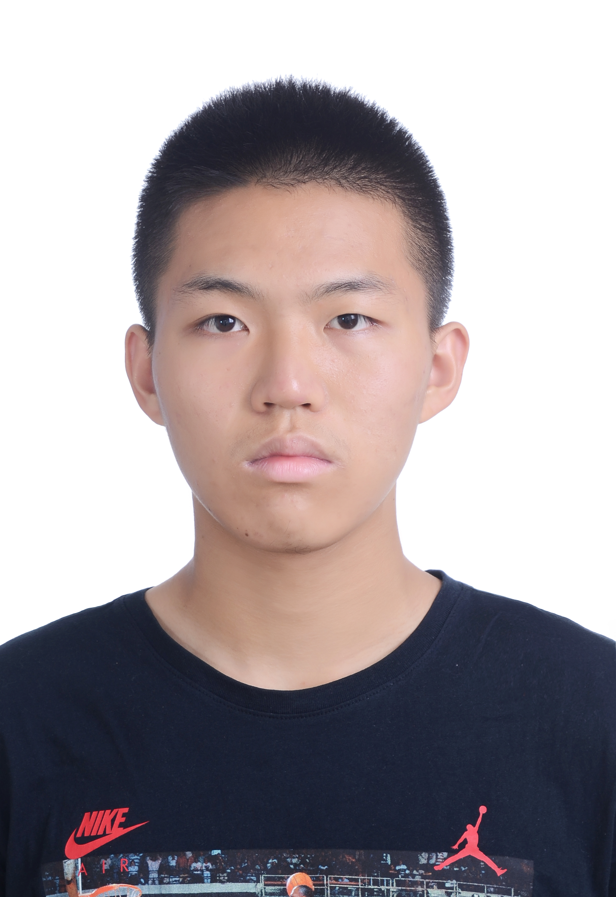

Zecheng Zuo
I am interested in large language models, particularly LLM-based multi-agent systems and efficient LLM inference. My background is in Internet of Things at Beijing University of Posts and Telecommunications (BUPT), where I participated in a joint program with Queen Mary University of London.
Previously, I worked with research groups at BUPT and Westlake University on deep learning, generative models, and project maintenance.

Research
My research interests center on how language-model agents collaborate and how large language models can be served with lower latency and computational cost. I am also interested in deep learning and generative modeling more broadly.
Research Experience
School of Computer Science, BUPT
Working with Prof. Cheng Yang and contributing to the maintenance and development of research projects.
LIN's Lab, Westlake University
Worked with Prof. Tao Lin in the School of Engineering. Studied diffusion models, reproduced DDPM and Rectified Flow, and built a foundation in generative modeling.
School of Artificial Intelligence, BUPT
Worked with Prof. Chuang Zhu. Studied deep learning and autonomous-driving object detection, read relevant research papers, and gained practical experience with PyTorch.
Selected Project
Smart Home System
Built an end-to-end smart-home prototype for remotely reading temperature and humidity data, controlling lights, and managing other devices in a physical house model.
Education
Beijing University of Posts and Telecommunications
Joint program with Queen Mary University of London.
Weighted Average Mark: 90.09/100 · Rank: 6/179
Honors & Awards
National Scholarship, 2024
Second-Class Scholarship, BUPT, 2023
First Prize, National College Student Mathematics Competition, 2023